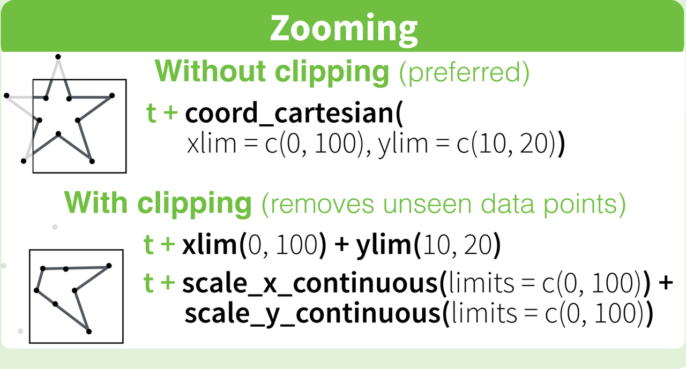

How to set limits for axes in ggplot2 R plots?
I plot the following:
library(ggplot2) carrots <- data.frame(length = rnorm(500000, 10000, 10000)) cukes <- data.frame(length = rnorm(50000, 10000, 20000)) carrots$veg <- 'carrot' cukes$veg <- 'cuke' vegLengths <- rbind(carrots, cukes) ggplot(vegLengths, aes(length, fill = veg)) + geom_density(alpha = 0.2)
Now say, I only want to plot the region between x=-5000 to 5000, instead
of the entire range.
How can I do that?
Answer
Basically you have two options
scale_x_continuous(limits = c(-5000, 5000))
or
coord_cartesian(xlim = c(-5000, 5000))
Where the first removes all data points outside the given range and the second only adjusts the visible area. In most cases you would not see the difference, but if you fit anything to the data it would probably change the fitted values.
You can also use the shorthand function xlim (or ylim), which like the
first option removes data points outside of the given range:
+ xlim(-5000, 5000)
For more information check the description of coord_cartesian.
The RStudio cheatsheet for ggplot2 makes this quite clear visually. Here is
a small section of that cheatsheet:

Distributed under CC BY.